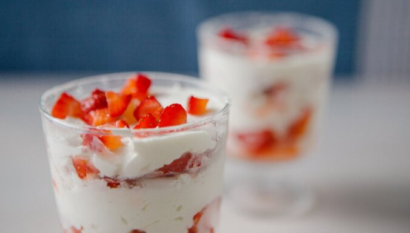

Atpakaļ uz manām receptēm
Zemeņu deserts ar zefīriem

Garšīgs zemeņu deserts.
Šo saldo kārtojumu var pagatavot nepilnā pusstundā. Vienkāršāk vairs nav iespējams!
Recepte paredzēta 6 porcijām.
- 6 gab. vaniļas zefīri
- 500 ml saldais krējums
- 1 kg zemenes
Pagatavošana:
- Zemenes sagriež plānās šķēlītēs vai sakapā.
- Zefīru saplucina mazos gabaliņos.
- Saldo krējumu saputo putukrējumā.
- Ņem sešus deserta trauciņus (vai vienu lielu bļodu) un ieklāj pirmo kārtu zefīrus.
- Uz zefīriem uzber zemenes.
- Virs zemenēm liek putukrējumu un tā būvē, līdz trauks pilns.
Noslēdz ar putukrējuma kārtu un apber ar sagrieztām zemenēm.
Labu apetīti!
Recepte delfi.lv Tasty